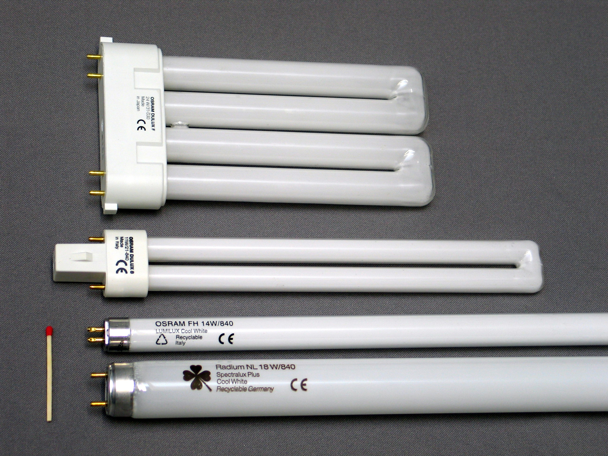
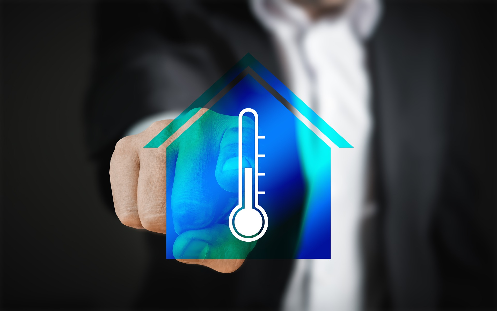
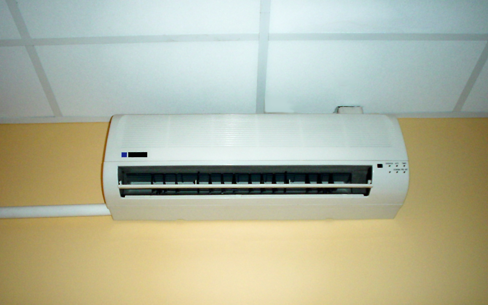
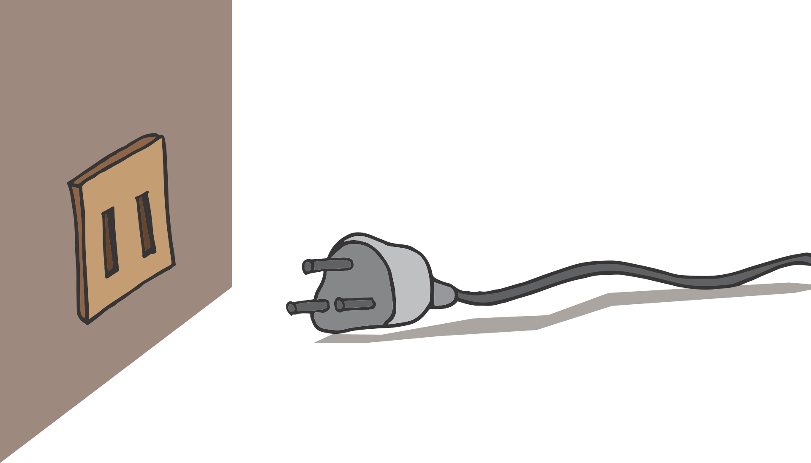
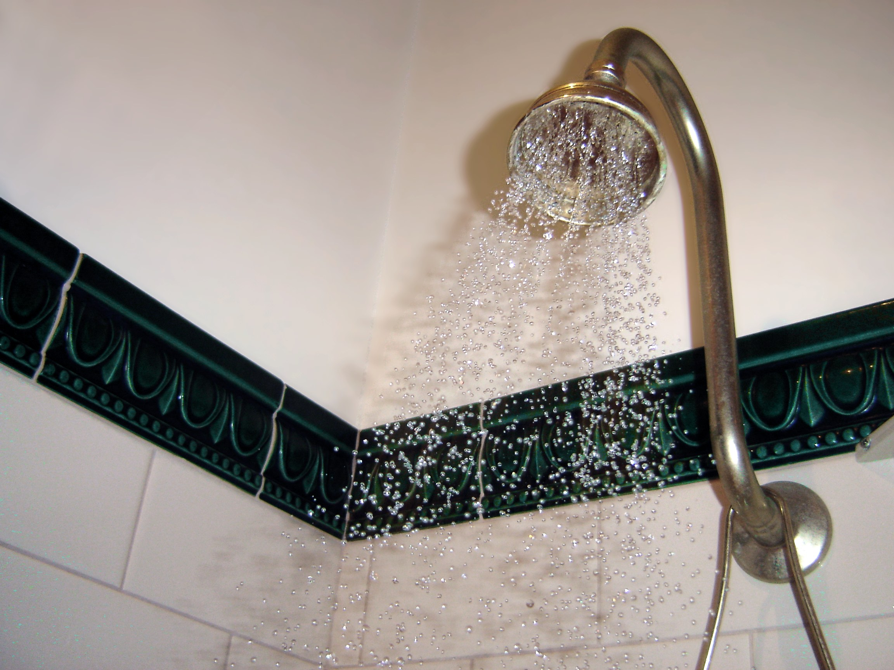
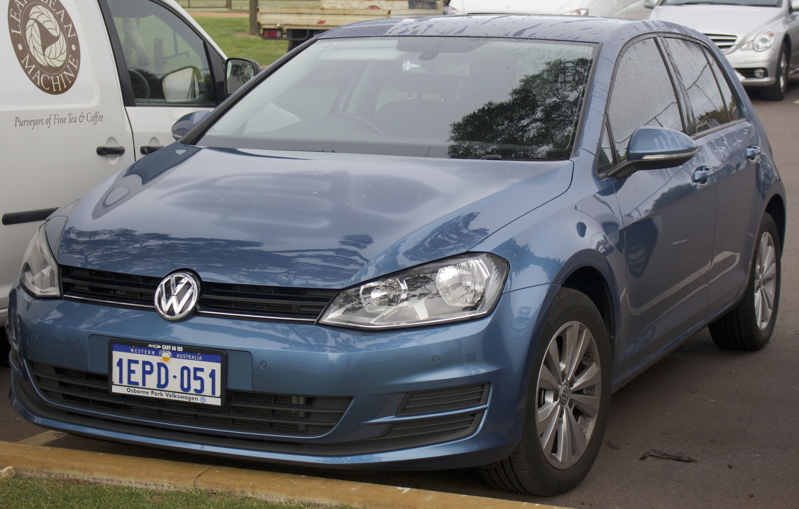
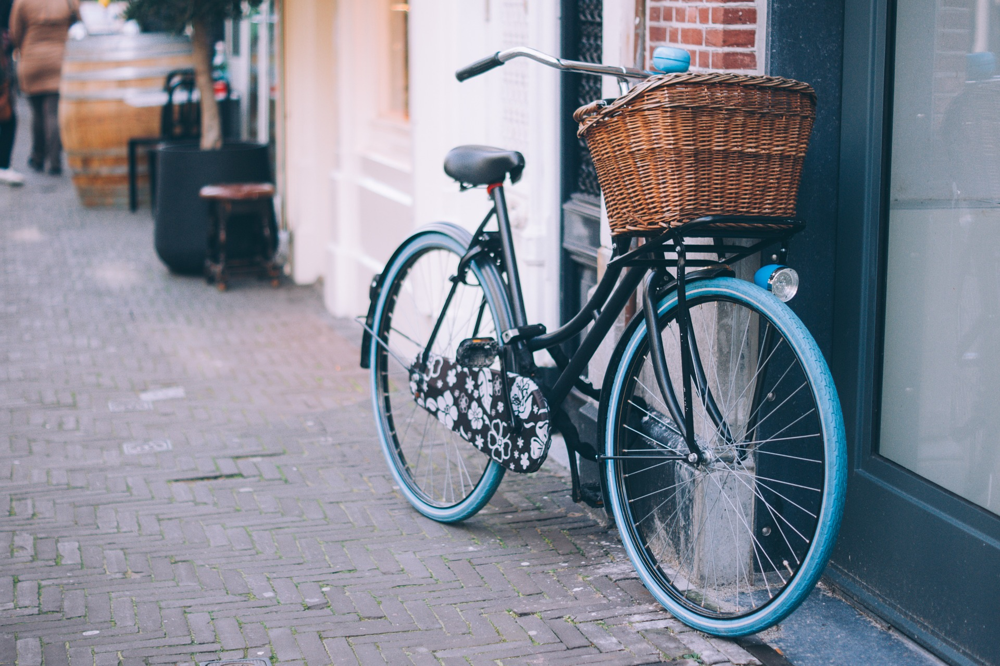
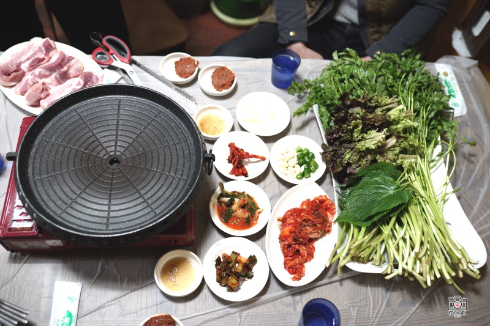

전기를 아껴주는 절전형광등(CFL)은 몇 년 전까지만 해도 가격이 비쌌지만, 이제는 마트에서도 싼 가격에 쉽게 구입할 수 있다. 물론 백열등보다는 비싸지만, 밝기를 고려하자면 훨씬 더 적은 전력을 소모한다. 수명도 일반 전구보다 10배나 길다. 매년 아낄 수 있는 금액은 30달러 정도다.
미국 환경보호청(EPA) 측은 “미국 내 각 가정에서 전구 1개씩만 절전형광등으로 바꿔도 연간 80만 대의 자동차가 배출하는만큼의 온실가스를 줄일 수 있다”고 밝혔다.
2. 적정온도 유지하기

난방보일러의 온도조절기를 평소에 몇 도에 맞춰두는지 알아두었다가, 계절별로 조금씩 변화를 주면 에너지 비용을 줄일 수 있다.
여름에는 평균보다 2도를 더 높이고, 겨울에는 2도를 더 낮춘다. 이것만으로도 불편하지 않은 실내온도를 유지하며 100달러에 가까운 전기요금을 절약할 수 있다. 온실가스로 계산하면 1톤에 해당한다.
3. 에어컨 필터 청소하기

거주 지역과 환경에 따라 청소 주기가 달라지지만, 필터를 청결하게 유지하는 것만으로도 매년 150달러를 절약할 수 있다. 꽉 막힌 필터는 전기도 더 많이 먹고 온실가스 배출량도 늘어나기 때문이다. 알레르기의 원인이 되는 유해입자도 줄어들어 공기가 쾌적해진다는 장점도 있다.
4. 전기제품은 플러그까지 뽑기

TV 등의 전자제품은 전원을 꺼둔다 해도 전선만 연결되어 있으면 평소의 절반에 해당하는 전기를 소모할 가능성이 있다. 핸드폰을 꼽지 않은 충전기도 전기를 잡아먹는다는 의미다. 버튼을 눌러 전원을 끄지 말고 플러그까지 뽑아야 한다. 에너지 흡혈귀들의 꼬리를 떼어놓는 행동으로 1년에 수백 달러를 절약할 수 있다.
5. 절약형 샤워기 쓰기

구식 샤워꼭지를 절약형 새 모델로 교체하는 데는 한두가지 공구와 15분의 시간만 있으면 된다. 절약형 샤워기는 물을 적게 소모함으로써 물을 데우는 데 쓰이는 에너지도 절약시켜준다. 물을 데우는 급탕 기능은 가정의 에너지 사용량 중 25%나 차지한다. 절약형 샤워기 하나로 매년 수백 달러를 아낄 수 있다.
6. 경제적으로 운전하기
고속도로에서는 타이어 공기압을 적절히 유지하고 정속주행을 하는 것으로 연비를 15%나 높일 수 있다. 시내에서는 느긋한 마음으로 운전하는 것이 좋다. 엑셀은 부드럽게 밟고, 급정거는 가급적 피하고, 제한속도를 넘지 않는 것이다. 잠시 대기할 때도 공회전을 하지 말고 시동을 끄자. 차 안에 앉아 음식을 서비스 받을 수 있는 드라이브인(drive-in) 식당은 피하자. 주차 후 걸어 들어가 음식을 즐기는 식당이 연료비를 아껴준다.
7. 1년에 한번 자동차 점검하기

매년 200~300달러를 들여 엔진 전체를 점검하고 손보는 일은 오히려 좋은 투자가 될 수 있다. 산소 센서가 고장나면 1리터에 1.5킬로미터나 연료가 더 든다. 점화플러그가 낡았거나 공기필터가 더러워도 연료 손해가 크다. 또 하나 잊지 말아야 할 것은 연료 주입구. 뚜껑이 헐겁거나 느슨하면 휘발유가 증발해 공기도 오염되고 손해도 볼 수 있다.
8. 자전거에 쌓인 먼지 털기

자전거는 기름이 아닌 칼로리를 소모하는 효율적인 교통수단이다. 굳이 출퇴근 모두를 자전거로 해결하지 않아도 좋다. 잠깐 타는 것만으로도 자전거는 건강에 좋고 환경에도 친화적이기 때문이다. 처음에는 1주일에 하루 정도를 자전거로 출퇴근하는 것으로 시작하자. 다만 새벽이나 저녁 무렵에 타려면 헬멧, 자물쇠, 라이트 등 안전장구를 갖춰야 한다.
9. 일주일에 하루는 채식하기
완벽한 채식주의자로 살아갈 준비가 아직 덜 되었다면 고기 섭취량을 줄여보는 건 어떨까. 1킬로그램의 고기가 접시에 오르려면 가축에게 30킬로그램이 넘는 콩과 곡물을 먹여야 한다. 프랜시스 무어 라페(Frances Moore Lappé)가 베스트셀러 ‘작은 지구를 위한 다이어트(Diet for a Smaller Planet)’에서 지적한 사항이다.
게다가 미국 내 축산업에서 소모되는 물은 미국 전역에서 소비되는 양의 절반에 해당한다. 건강하고 환경친화적인 채식 위주의 식단을 통해 육식을 대체할 것을 권한다.
10. 신토불이 제철음식 먹기

음식이 생산에서 유통까지 이동한 거리를 푸드 마일리지(Food Mileage)라 부른다. 비영리단체인 ‘지속가능한 식탁(Sustainable Table)’에 따르면, 당근의 푸드 마일리지는 평균 3천킬로미터나 된다. 푸드 마일리지가 높을수록 어마어마한 양의 화석연료와 포장재료가 소모된다.
주변 지역에서 제철에 생산된 식재료를 구입하는 것이 열쇠다. 운송과 관련된 에너지 비용도 줄이고 지역경제도 살려준다. 주말마다 농산물 시장에 들러 신선한 식재료로 장바구니를 채우자.
‘천리길도 한 걸음부터’라는 속담이 있다. 생활 속에서 실천하는 작은 행동 몇 개가 지구 전체에 큰 도움이 되기도 한다. 현명한 판단과 행동으로 탄소 발자국을 줄여 건강한 미래를 만들자.
 고속도로에서는 타이어 공기압을 적절히 유지하고 정속주행을 하는 것으로 연비를 15%나 높일 수 있다. 시내에서는 느긋한 마음으로 운전하는 것이 좋다. 엑셀은 부드럽게 밟고, 급정거는 가급적 피하고, 제한속도를 넘지 않는 것이다. 잠시 대기할 때도 공회전을 하지 말고 시동을 끄자. 차 안에 앉아 음식을 서비스 받을 수 있는 드라이브인(drive-in) 식당은 피하자. 주차 후 걸어 들어가 음식을 즐기는 식당이 연료비를 아껴준다.
고속도로에서는 타이어 공기압을 적절히 유지하고 정속주행을 하는 것으로 연비를 15%나 높일 수 있다. 시내에서는 느긋한 마음으로 운전하는 것이 좋다. 엑셀은 부드럽게 밟고, 급정거는 가급적 피하고, 제한속도를 넘지 않는 것이다. 잠시 대기할 때도 공회전을 하지 말고 시동을 끄자. 차 안에 앉아 음식을 서비스 받을 수 있는 드라이브인(drive-in) 식당은 피하자. 주차 후 걸어 들어가 음식을 즐기는 식당이 연료비를 아껴준다.
 완벽한 채식주의자로 살아갈 준비가 아직 덜 되었다면 고기 섭취량을 줄여보는 건 어떨까. 1킬로그램의 고기가 접시에 오르려면 가축에게 30킬로그램이 넘는 콩과 곡물을 먹여야 한다. 프랜시스 무어 라페(Frances Moore Lappé)가 베스트셀러 ‘작은 지구를 위한 다이어트(Diet for a Smaller Planet)’에서 지적한 사항이다.
게다가 미국 내 축산업에서 소모되는 물은 미국 전역에서 소비되는 양의 절반에 해당한다. 건강하고 환경친화적인 채식 위주의 식단을 통해 육식을 대체할 것을 권한다.
완벽한 채식주의자로 살아갈 준비가 아직 덜 되었다면 고기 섭취량을 줄여보는 건 어떨까. 1킬로그램의 고기가 접시에 오르려면 가축에게 30킬로그램이 넘는 콩과 곡물을 먹여야 한다. 프랜시스 무어 라페(Frances Moore Lappé)가 베스트셀러 ‘작은 지구를 위한 다이어트(Diet for a Smaller Planet)’에서 지적한 사항이다.
게다가 미국 내 축산업에서 소모되는 물은 미국 전역에서 소비되는 양의 절반에 해당한다. 건강하고 환경친화적인 채식 위주의 식단을 통해 육식을 대체할 것을 권한다.